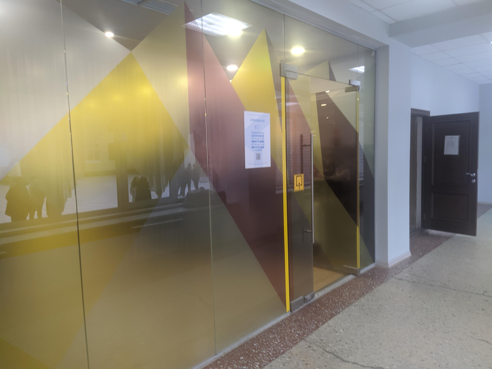

Guide to some of University of Tyumen's cafeterias
Cafeteria of Institute of Finance and Economics
This cafeteria is often considered to be one of the best in the entire university by a good number of students. Finding the entrance to it, however, can be tricky. To get to it, you have to go down the stairs, enter the cloakroom, then turn left, go forward and turn left again. You will see a door that looks just like in this picture. This door is the entrance to the cafeteria of this building.

Cafeteria of School of Computer Sciences
This cafeteria is an another good place to have a lunch. To many people, it's not immediately obvious where the entrance is. If you decide to visit that cafeteria, starting at building's entrance, you'll need to go left until you'll see a hallway on your left. Walk down that hallway and you'll find this door. This is the entrance to the cafeteria.
Buffet of School of Computer Sciences
Located just to the left in front of the building entrance, buffet is a perfect option if you don't want to go to a cafeteria and just want to grab something quickly. This picture shows a rough top-down view of the area near the building entrance.